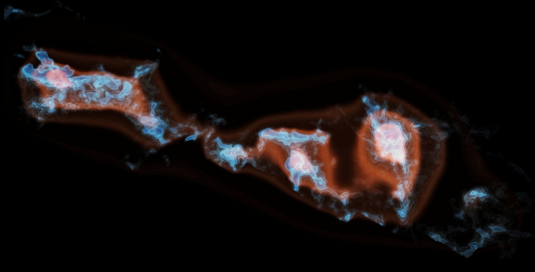
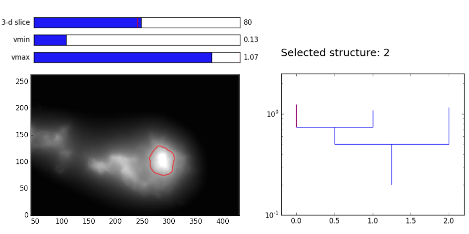

Gravity-based structure analysis of molecular clouds
Gravity plays important roles in astrophysical conditions. In observations, gas can be observed in Position-Position-Velocity (PPV) space. The G-virial method aims to synthesise the position and velocity informaiton of the gas, and provides a global picture of gravity.
The input of the method is a distrubtion of mass in the PPV space, which can be obtained by mapping the molecular gas with radio telescopes. The output of the method is a map of the importance of gravity in the PPV space (G-virial map).
|

|
The G-virial map is derived based on a map of mass distribution. Given a mass distribution
Simply try it out.
Download a CO data cube. The axes have to be arranged as (v, y, x).
Run the program
where file_in is the input fits file, file_out is the output file, d is the distance of the object measured in pc, c_0 and npad_fft are parameters. Usually, c_0 = 1e5 and npad_fft = 3.
Another way of using the program is to call it as a function in python. Please find more details in the documentation.
The output is a data cube which have the same dimensions as the input. The values in the output represent the importance of gravity across the PPV space. It can be visualized and analyzed with many standard tools, such as the Dendrogram .
|

|
The G-virial method was introduced in this paper: G-virial: A Gravity-based Method to Quantify the Structure of Molecular Clouds.